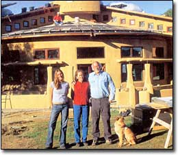
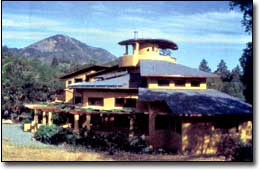
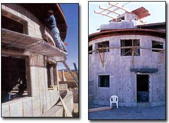
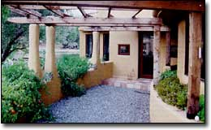
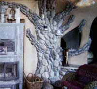
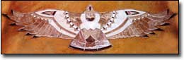

When my wife, Nancy, and I started planning our dream homestead in 1998, our first thought was that our house needed to be far more than a shelter. We wanted our home to express our values and reflect everything we had learned from our 35 years of renewable-energy experience at Real Goods. We wanted to create a home that would promote sustainability by being energy independent, nontoxic and gentle to the environment, and we wanted it to be stunningly beautiful - a home to soothe the soul and nourish the spirit.
Three miles down a dirt road from Real Goods we found an idyllic piece of land with a breathtaking view of the surrounding valley. It was totally off the grid. off all grids - there were no water or septic systems, and the nearest electricity and telephone service were a mile away. A seasonal creek isolated the property; to access it we had to build a bridge.
Designing the Dream
This was a raw nugget of paradise where our dreams could be molded out of clay, literally. The soil is primarily serpentine clay, which makes gardening a challenge but pond-building a snap. Our first project after we graded the road was to dig a 10-acre-foot pond. We use the pond for recreation in the 110-degree California summers and as a source of passive cooling for our house.
Building lessons learned at the Solar Living Center taught us how critically important it is to plan your landscaping as an integral part of the complete homestead design - both for passive cooling and for personal serenity.
At the far end of the pond, we sculpted a 30-foot-wide grotto out of stucco-covered concrete, with five giant chutes to create a waterfall. The water, which overflows from our three natural springs, cascades onto the clover lawn, creating an oasis.
Next, we added an acre of lush permaculture landscaping complete with Spanish grasses, a coastal redwood grove, lavender and other Mediterranean foliage, lots of yarrow, alders and maples, and a corridor of swamp cypress that likes to get its feet wet in the pond.
The next step was to choose the appropriate location for the house. We were in no hurry and deemed it necessary to camp at each potential site.
The area we finally selected adjoins the pond and has full southern exposure. That made it ideal for using passive-solar heating in the house - and for establishing our vegetable garden, and fruit and olive orchards.
We were fortunate to find an architect, Craig Henritzy, who shared our vision of sustainable living. From our initial conversations and his visits to the Solar Living Center, Craig drafted a preliminary design for our house, dubbed SunHawk: a round house oriented exactly to the cardinal directions and patterned after a red-tailed hawk ready to take flight.
After countless design revisions we discovered that the original 4,500-square foot house plan was too costly; with our three children grown and away at college, it seemed wasteful and too big for our needs, too. We shrunk our plan to 2,900 square feet with three bedrooms and one-and-a-half bathrooms.
Construction Begins
Before we started the house, we built a storage barn complete with 15 kilowatts of used photovoltaic modules. The barn also houses our energy storage and con version system, which is connected to the house through underground wires. In the rainy winter season, we tap into the flow of our seasonal creek with a 1.5-kilowatt hydroelectric system.
After we selected a contractor, Steve Gresham, who is a master homebuilder and solar installer, we finally broke ground in late 2001, but winter rains delayed construction until spring 2002.
It soon became clear that house building, even when you have a competent contractor, is a full-time endeavor, so in May 2002, we moved into our renovated barn to better manage the process.
SunHawk's foundation is awesome - 120 yards of concrete and 8-foot footings - but Steve convinced us that we would be glad we overbuilt it after the next major earthquake!
We built the house with Rastra, a material made from 85 percent recycled plastic foam, such as Styrofoam, and 15 percent cement. With an approximate R-value of 35 (the range is from 20 to 50), it has the ideal insulating properties for our climate and makes our home highly energy efficient.
Rastra also is relatively inexpensive and perfect for molding into all kinds of shapes. The Rastra walls went up in 10-foot-long panels, which were lined with rebar, and concrete was poured in as grout to provide stability and insulation.
STRIVING FOR SUSTAINABILITY
We set out to exclusively use recycled and sustainable materials and to meet all our power needs with renewable energy. From the building of the Solar Living Center, we knew it was unlikely we would attain this lofty goal, but we wanted to move up the environmental curve as far as we could.
Nancy spent countless hours on the Internet and on the phone researching every aspect of the house - from building materials and their sustainability quotient to appliances and their energy efficiency. It took us weeks to decide on a roofing material. We looked at copper, composition shingles, slate and concrete, and finally decided on rubber shingles made entirely from recycled tires. They look exactly like slate from a distance.
To cover the Rastra, we used stucco on the outside and plaster on the inside; we used no insulation or sheetrock on the main walls.
We used beautiful recycled redwood for barge rafters, fascia boards and decking. For our large 4-by-12-inch beams, we found some Douglas fir timbers reclaimed from a naval warehouse. And for the little bit of flooring that isn't concrete, we found some reclaimed walnut. For new wood, we bought sustainably harvested redwood.
In Sync With Seasons
As part of the passive-solar design, the walls and windows allow the winter sun to penetrate and warm the interior.
The living room's concrete floor and high ceiling have diagonal patterns that resemble tail feathers, and the piece de resistance is the stained-glass hawk installed above the south-facing French doors. On the winter solstice, sunlight streams through the window and the hawk "flies" across the floor from west to east. At exactly solar noon, the sunlight illuminates a slate hawk in the floor in front of our woodstove. A solar calendar runs the length of the living room floor from north to south; the passing of the seasons is marked by the way the sunlight falls on different portions. Concrete benches in the south part of the living room face the woodstove, creating a gathering place and a classroom atmosphere. Here we hope to house some of the sustainable-living workshops conducted through the Solar Living Institute ( www.solarliving.org ).
The house, with its southern orientation, low-emissivity windows and thermal mass, is capable of being heated completely passively, but we do have some active systems.
These include radiant floor heating, in which tubes run inside the concrete floors on the ground floor and second level.
At exactly solar noon, the sunlight illuminates a slate hawk in the floor in front of our woodstove.
Hot water is provided to the radiant floor in three ways: first, via two 4-by-8 - foot passive-solar collectors, each of which has 50 gallons of storage capacity; and second, through diverting the excess voltage from our photovoltaic and hydroelectric systems to waterheating elements in a 120-gallon storage tank. If all else fails, a propane burner kicks in, but we hope to avoid using any fossil fuels. Thanks to our contractor, the cooling system is equally unique. In the center of the house is an enclosed "fountain room," underneath which lies a 9-foot-deep rock storage bed. Two 1-foot-diameter culverts within the bed extend 150 feet deeper underground. In our part of the country, the air is consistently 67 degrees at that depth. Two solar-powered fans at the termination of the culverts pull cool air into the fountain room, where it mixes with the fountain water and provides natural evaporative cooling throughout the house.
ROOMS WITH A VIEW
Upstairs, off the master bedroom, a large deck faces west and overlooks the pond and grotto. Adjacent to the bedroom is a walk-in closet and my office. The master bathroom is circular, with a large shower and bathtub, and a picturesque view of 3,000-foot-high Duncan Peak. We got so obsessed with the views from the house (there are 69 windows!) that we forgot to leave space for mirrors in the bathroom.
From my office, a spiral staircase leads 12 feet up to the top deck, the "eye of the hawk," which offers a 360-degree view of the surroundings. If you get truly inspired, you can climb on up to the roof for an even better view.
HOME SWEET HAVEN
Building SunHawk has been the most rewarding experience of our lives. It has been a long and arduous journey of four years from conception to completion, but we now have a home where we hope to spend the rest of our days in peace and serenity, free from fossil fuels, the electric grid, telephone wires and highway noise.
Best of all, we have a spiritual haven to enjoy with each other and to share with our children and grandchildren.
SunHawk shows that it is possible to build without cutting down trees, heat and cool without using fossil fuels, and enjoy all the 21st-century creature comforts while minimizing the impacts on the planet that sustains us.
Mother Earth News
|
 By Steve Gresham John Schaeffer, shown left with his wife, Nancy, center, and daughter, Sara, is the founder of Real Goods, a solar retail business that has helped outfit more than 50,000 homes with solar power. The 12-acre Real Goods Solar Living Center in Hopland, California, hosts nearly 200,000 visitors each year. Schaeffer also founded the Solar Living Institute, an environmental education nonprofit. He has experimented with and taught about state-of-the-art green building and renewable energy systems throughout his career. |
Craig Henritzy A glimpse into the fountain room, SunHawk's primary cooling system. The statue, Voluptua, was sculpted by Francine Kirsch. |
 Craig Henritzy John and Nancy Schaeffer designed their home, SunHawk, to provide all the comforts of modern living while promoting sustainable building practices. The Schaeffers reside in Hopland, California. |
|
 Craig Henritzy The house's sunny south terrace provides an ideal place for growing tomatoes. |
 John Schaffer In the living room, a rock tree made from local stones wraps around a Tulikivi woodstove. |
 Craig Henritzy |
|
 |
|
|